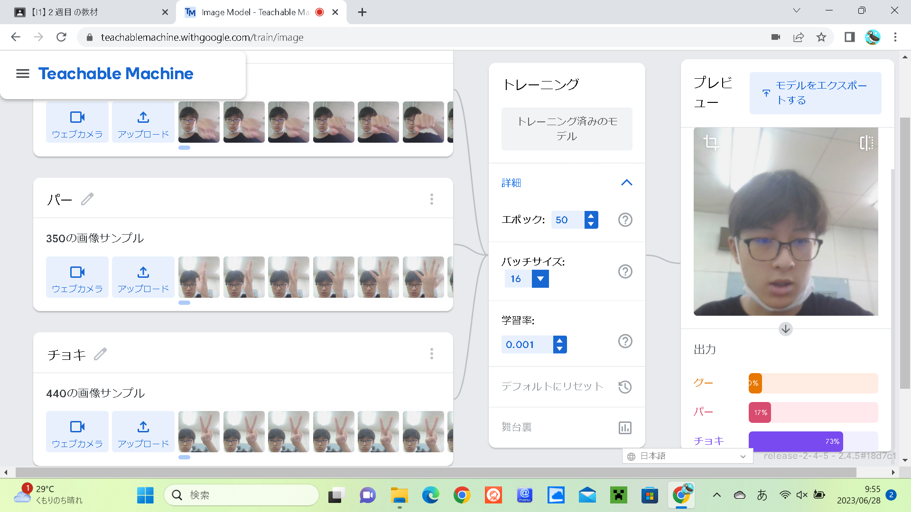
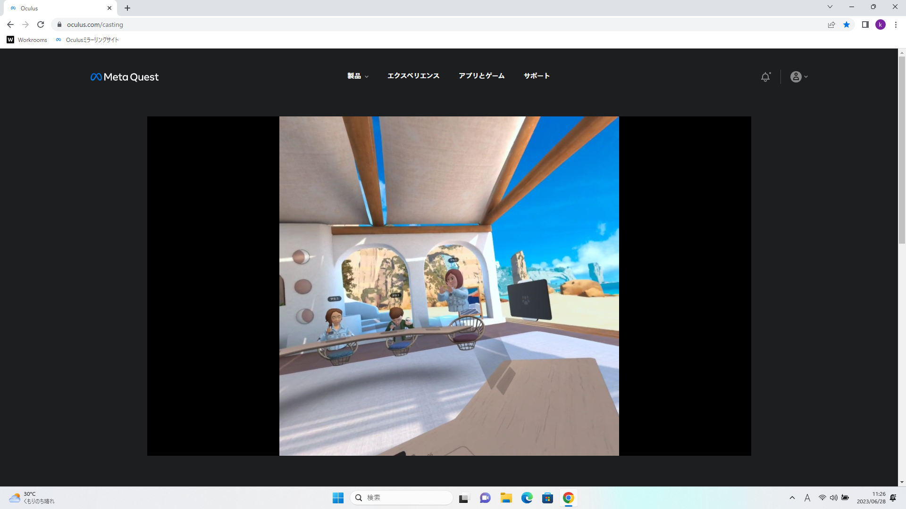

第2週目
2-1 １週目のレポートをHTMLで作る
１週目のレポート
1.内容
1週目のレポートをHTMLで作った。写真をアップロードしたり、内容、感想を書いたりした。
2.感想
レポートをHTMLで作る方法を知ることができた。また、レポートは今まで、googleフォームで書いて提出していたのでとても新鮮な気持ちになった。そして、githubについてまた1つ知ることができた。
2-2 機械学習体験

1.内容
Teachable Machineというウェブベースのツール環境を使って、グー、チョキ、パーを判別する機械学習モデルを作成し、人工知能技術の一部を体験した。
2.感想
Teachable Machineの使い方を軽く知ることができた。グー、チョキ、パーを判別する機械学習モデルを作成することが、予想外にすんなりとできて意外に感じた。
人工知能技術の一部を体験して、人工知能の凄さを少し感じることができた。
2-3 VR（バーチャルリアリティー：Virtual Reality）会議室の体験

1.内容
情報技術で仮想空間を作り、仮想会議室にユーザーとして参加するメタバース体験をWorkroomsというアプリケーションで行った。
2.感想
VRゴーグルを使って、メタバース体験をして、メタバースの内容を少し知ることができました。また、